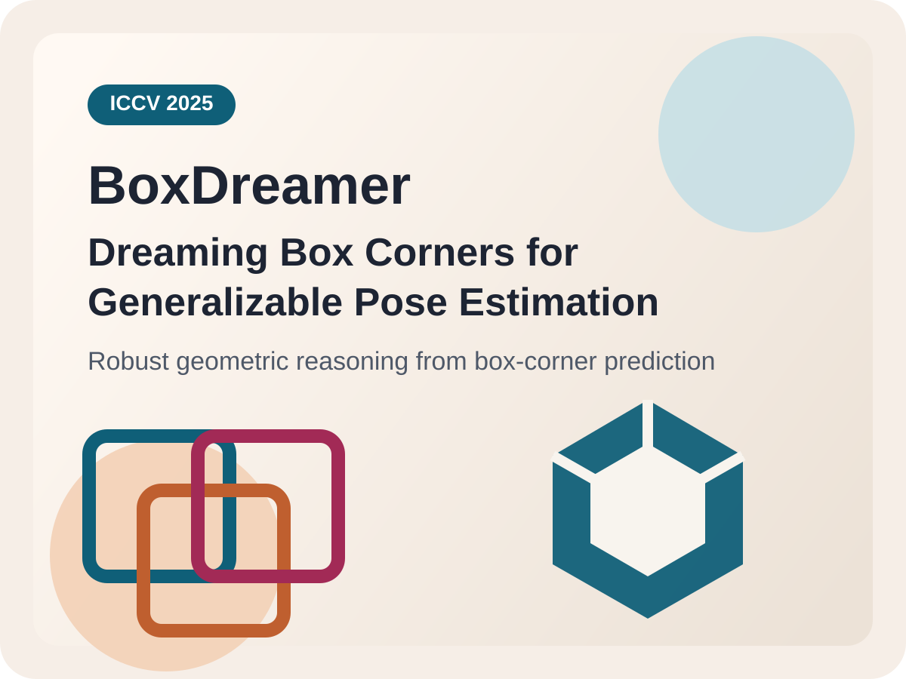

2026.09
Joining Beijing Normal University as an incoming M.S. student, advised by Hongwen Zhang.
About Me
I am a final-year undergraduate in Artificial Intelligence at Chongqing University and an incoming M.S. student at Beijing Normal University.
Starting in September 2026, I will join Hongwen Zhang's group at Beijing Normal University. My research focuses on human-centric 3D vision, especially hand-object interaction, human-scene interaction, and 3D reconstruction / generation.
I have conducted research with Yebin Liu at Tsinghua University and Sida Peng at Zhejiang University. I am currently based in Chongqing, China.
News
2026.09
Joining Beijing Normal University as an incoming M.S. student, advised by Hongwen Zhang.
2026.03
My first-author paper is published in IEEE TKDE.
2025
BoxDreamer appears at ICCV 2025 as a fourth-author project.
2025.07-12
Remote research internship with Yebin Liu's group on single-view hand-object reconstruction.
Selected Publications
Highlighted publication marks my current first-author work.
IEEE Transactions on Knowledge and Data Engineering (TKDE), 2026
Quantum multisource information fusion for time series classification with a CDGFN-based framework.

International Conference on Computer Vision (ICCV), 2025
Generalizable object pose estimation by predicting box corners for robust geometric reasoning.
Academic Services
More academic service information will be added here as it becomes available.
I am always happy to connect on research collaborations and related academic discussions.